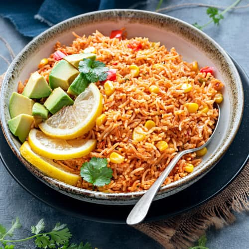

Salsa

Description
Salsa is a variety of sauces used as condiments for tacos and other Mexican and Mexican-American foods, and as
dips
for tortilla chips. They may be raw or cooked, and are generally served at room temperature.
Though the word salsa means any kind of sauce in Spanish, in English, it refers specifically to these Mexican
table
sauces, especially to the chunky tomato-and-chili-based pico de gallo, as well as to salsa verde.
Tortilla chips with salsa are a ubiquitous appetizer in Mexican-American restaurants, but not in Mexico itself.
Ingredients
- 3 tomato (ripened)
- 3 clove garlic
- ¼ onion chopped
- ¼ tsp cumin powder / jeera powder
- 1 dried red chilli
- 2 tbsp coriander (chopped)
- 6 slice jalapeno
- ½ tsp salt
- 1 tbsp lemon juice
- 2 tsp olive oil stock / water
Steps
- firstly, in a tawa roast 3 tomato, 3 clove garlic and ¼ onion. you can alternatively roast in oven.
- flip in between until the onions and garlic turn golden brown.
- keep the roasted onion and garlic aside and continue to roast tomatoes.
- roast tomatoes, until the skin of tomatoes, start to peel off.
- cool the tomatoes completely, and transfer to the blender.
- also, add roasted onions and garlic.
- furthermore, add ¼ tsp cumin powder, 1 dried red chilli, 2 tbsp coriander, 6 slice jalapeno, ½ tsp salt and 1
tbsp lemon juice.
- blend to a coarse paste without adding any water.
- now add 2 tsp olive oil and give a mix.
- finally, enjoy roasted tomato salsa recipe with nachos chips.
Back to Home